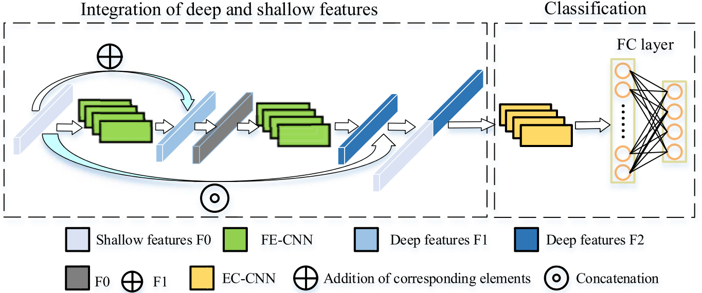
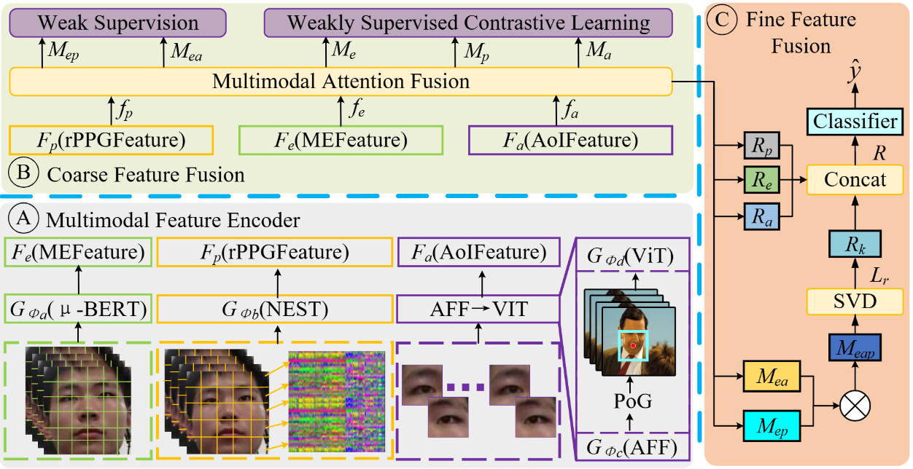
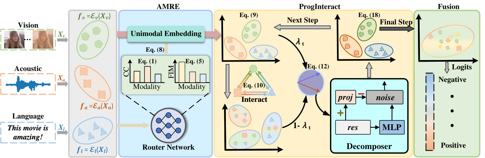
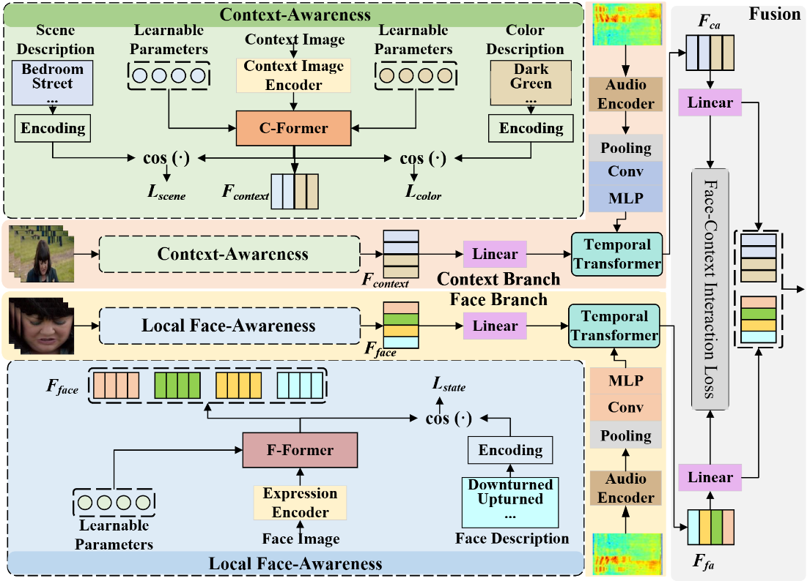

I am a researcher at Nanjing University of Science and Technology working on multimodal learning and affective computing. My research focuses on understanding human emotion from language, acoustic, and visual signals, particularly when multimodal inputs are incomplete, noisy, or unreliable.
My current work studies reliability-aware fusion, progressive representation learning, and distillation for robust multimodal sentiment and emotion analysis.
For questions or collaborations, please contact me at bjd0706@njust.edu.cn.
🔥 News
- : 🎉🎉 Our academic homepage is now online, with source code available on GitHub.
- : 🎉🎉 Our paper "Progressive representation learning for multimodal sentiment analysis with incomplete modalities" was accepted by ECCV 2026 (European Conference on Computer Vision).
- : 🎉🎉 Our paper "Context Effect Guided Multi-Source Awareness Framework for Dynamic Facial Expression Recognition" was accepted by IEEE Transactions on Affective Computing.
- : 🎉🎉 Our paper "SVD-guided multimodal feature fusion for emotion recognition from facial videos" was published in IEEE Transactions on Affective Computing.
- : 🎉🎉 Our paper "An emotion recognition method based on eye movement and audiovisual features in MOOC learning environment" was published in IEEE Transactions on Computational Social Systems.
Publications

An emotion recognition method based on eye movement and audiovisual features in MOOC learning environment
IEEE Transactions on Computational Social Systems · 2022
We present a multimodal MOOC learner emotion recognition method that combines eye-movement, audio, and video signals using FCDE and PCRS features.

SVD-guided multimodal feature fusion for emotion recognition from facial videos
IEEE Transactions on Affective Computing · 2025
An SVD-guided model decomposes heterogeneous facial-video features and fuses them hierarchically with level-specific loss strategies for emotion recognition.

Progressive representation learning for multimodal sentiment analysis with incomplete modalities
ECCV 2026 · European Conference on Computer Vision
PRLF addresses missing modalities in multimodal sentiment analysis by estimating modality reliability, selecting a dominant modality, and progressively aligning and fusing available representations.

Context Effect Guided Multi-Source Awareness Framework for Dynamic Facial Expression Recognition
IEEE Transactions on Affective Computing · 2026
The framework combines facial, contextual, and audio cues through context-awareness and local face-awareness modules for dynamic facial expression recognition.
Research
- Multimodal sentiment and emotion analysis
- Reliability-aware fusion under missing modalities
- Progressive representation learning and knowledge distillation
- Affective computing and facial expression recognition
Affiliation
Research interests: multimodal learning and affective computing.